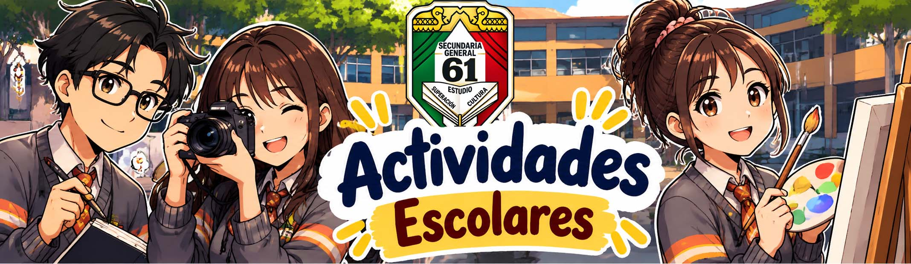
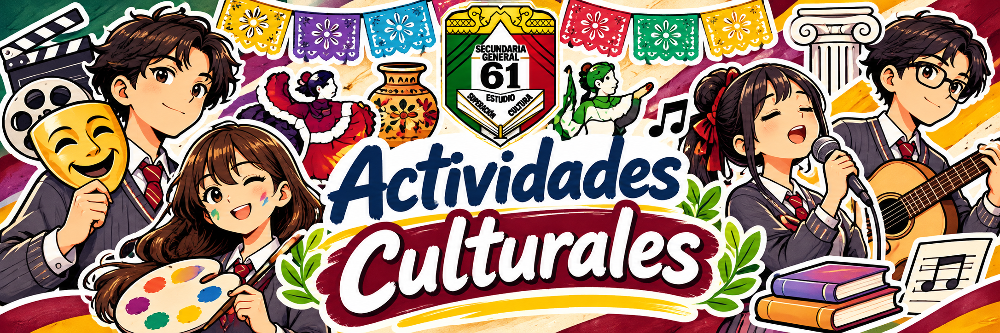
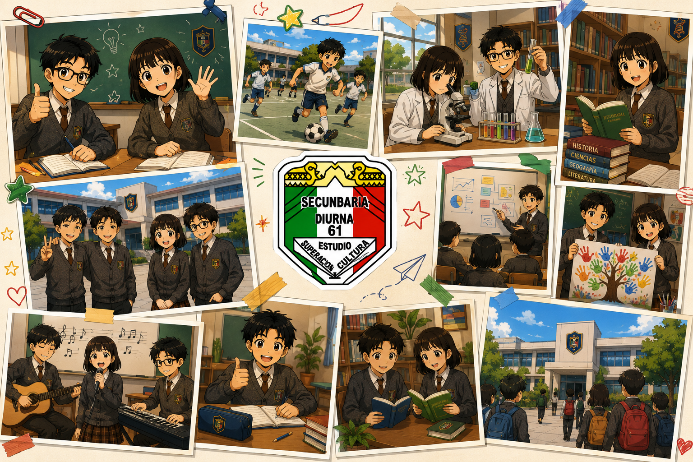

Vida escolar
En esta sección compartimos actividades académicas, culturales, deportivas y comunitarias realizadas en la escuela.



En esta sección compartimos actividades académicas, culturales, deportivas y comunitarias realizadas en la escuela.

